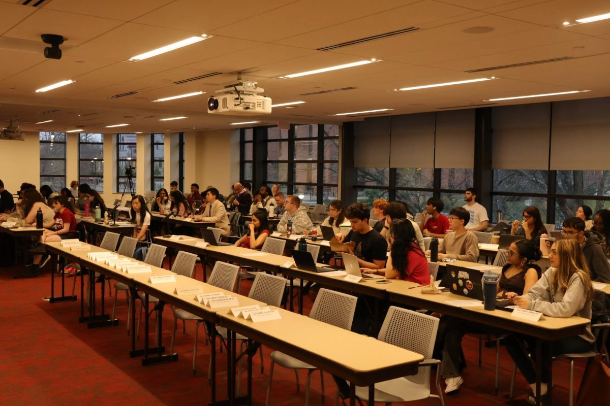

Massachusetts Daily Collegian

iClicker is out
During the Student Government Association's (SGA) weekly Senate meeting on Wednesday, April 1, Chair of the Academic Oversight Committee, Cass Melo, confirmed that the University of Massachusetts' contract with iClicker will end this spring.
The university will be officially licensed with Top Hat as a no-cost replacement for iClicker starting in the fall.

"free for students"
“The university administration has agreed to cover the cost so that it will now be free for students,” Melo said.
iClicker, which was used in classrooms for tracking attendance and polling, was criticized by students for its cost and required use in certain classes.